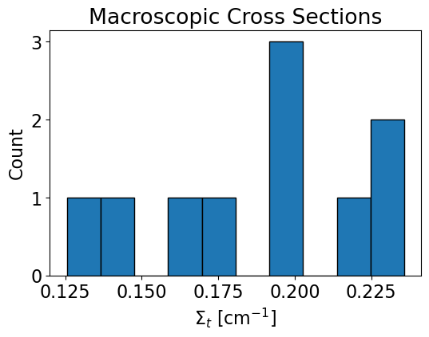

Project 1: Weighted Delta Tracking¶
Introduction¶
Weighted delta tracking is implemented for Monte Carlo simulations of neutron transport as a nonanalog method. The technique uses formalisms developed in Woodcock delta tracking but removes probability sampling for real or virtual collisions. This technique also uses implicit capture to adjust neutron weight during its random walk. Using weighted delta tracking with Russian Roulette, the algorithm performance is compared against surface tracking and standard delta tracking with an analytical solution for reference.
The weighted delta tracking algorithm and associated data processing is completed using pointsource_sphere.py which contains the class PointSourceInSphere. The functions contained within PointSourceInSphere include an analytic solver, a solver for surface tracking (ST), a solver for delta tracking (DT), a solver for weighted delta tracking (WDT), and associated post processing functions such as statistical analysis and plotting.
The Monte Carlo simulation is initialized within the class using:
def __init__(self, nMC, S0, R, sigT):
nMC represents the number of Monte Carlo simulations, S0 is the source strength, R is the radius of the outermost sphere in a series of concentric spherical shells, and sigT is an array containing total cross sections for each region.
All solutions are developed in a Jupyter Notebook, a sample of which can be found here.
Methodology¶
The general approach to implementing a WDT solver with Russian Roulette is:
Sample neutron position following streaming.
Calculate neutron weight to be tallied for regions crossed from previous location to current.
Reduce neutron weight following the “collision.” (Representing a portion of the neutron absorbed, the remainder to continue its random walk.)
Check neutron weight against a threshold weight, if above the threshold repeat steps 1:4. If below the threshold, complete step 5.
Play Russian Roulette for survival and restore weight upon survival or terminate the neutron.
- This project uses the majorant cross section, defined as \(\Sigma_{maj} = max(\Sigma_{t,i})\), where i is over all regions. From this definition a pathlength is determined using
- \[S = -ln(\xi)/\Sigma_{maj}\]
\(\xi\) is a random number drawn from a uniform distribution between 0 and 1. Assuming a point source, all neutrons are born at the origin (0,0,0).
Note
Neutron directional quantities are sampled using the following:
The weight tallied for all regions crossed is given by \(w_{i-1}(\Sigma_{t,i}/\Sigma_{maj})\) and the reduction in neutron weight is calculated using \(w_{i}=w_{i-1}(1-\Sigma_{t,i}/\Sigma_{maj})\).
For each project I am expecting to see:
Brief project description
Methodology section
Results and discussion
Performance summary (execution times, accuracy, and so on).
Brief summary
Subsection¶
It is possible to reference various sections directly Project 1: Weighted Delta Tracking.
Or by feeding your own text: Project 1
Include figures:
{kind=link}
Example of a table
Method |
\(\Delta\) Leakage [%] |
Runtime [s] |
\(\sigma_{flux}\) |
FoM |
|---|---|---|---|---|
ST |
0.01 |
22.85 |
45.48 |
2.12E-5 |
DT |
0.04 |
20.54 |
45.42 |
2.36E-5 |
WDT |
0.02 |
25.58 |
44.49 |
1.98E-5 |